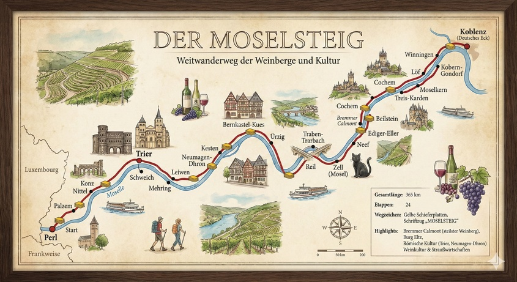

Weitwanderweg der Weinberge und Kultur
Der Moselsteig gehört zu den beliebtesten und längsten Qualitätswanderwegen in Deutschland. Auf einer Gesamtlänge von rund 365 Kilometern folgt er dem Lauf der Mosel von Perl (am deutsch-französisch-luxemburgischen Dreiländereck) bis zur Mündung in den Rhein am Deutschen Eck in Koblenz.
Der Weg zeichnet sich durch seine enorme Vielseitigkeit aus: Er führt durch steile Weinberge, dichte Wälder, vorbei an spektakulären Felsformationen und durch historische Fachwerkorte. Er verbindet Naturerlebnis mit der reichen römischen und weinbaulichen Kultur der Region.
Obwohl die Moselregion schon seit Jahrhunderten bewandert wird, ist der Moselsteig als durchgängiges Markenprodukt noch relativ jung. Er wurde offiziell im April 2014 eröffnet.
Das Ziel war es, die vielen existierenden lokalen Wanderwege zu einer einzigen, qualitätsgeprüften Route zu verbinden, um den Tourismus in der Region zu stärken. Vor der Eröffnung wurden Wege saniert, Markierungen vereinheitlicht und Rastplätze angelegt. Bereits kurz nach seiner Eröffnung erhielt er das Zertifikat „Leading Quality Trail – Best of Europe“ der Europäischen Wandervereinigung.
Heute ist der Moselsteig das touristische Rückgrat der gesamten Ferienregion Mosel. Er zieht jährlich Tausende von Wanderern aus ganz Europa an und ist ein wichtiger Wirtschaftsfaktor für Hotellerie, Gastronomie und Winzerbetriebe entlang der Strecke.
Der Weg trägt zudem das Gütesiegel „Qualitätsweg Wanderbares Deutschland“. Besonders geschätzt wird die Kombination aus sportlicher Herausforderung (durch die vielen An- und Abstiege aus dem Tal) und dem Genusswandern („Wandern und Wein“). Durch die Partnerwege, die sogenannten „Seitensprünge“ (Rundwanderwege), wurde das Netz mittlerweile auch in die Fläche erweitert.
Der Moselsteig ist in 24 Etappen unterteilt. Die Längen variieren zwischen 11 und 24 Kilometern, wobei auch das Höhenprofil stark schwankt.
| Etappe | Start - Ziel | Länge (ca.) | Charakter |
|---|---|---|---|
| 01 | Perl – Palzem | 24 km | Weitblicke über das Dreiländereck |
| 02 | Palzem – Nittel | 16,5 km | Durch Kalksteinfelsen und Weinberge |
| 03 | Nittel – Konz | 22,5 km | Panoramaweg oberhalb der Mosel |
| 04 | Konz – Trier | 21 km | Weg zur ältesten Stadt Deutschlands |
| 05-10 | Trier – Bernkastel-Kues | div. | Römische Weinstraße, steile Mäander |
| 11-14 | Bernkastel-Kues – Zell | div. | Mittelmosel, Fachwerk und Burgen |
| 15-18 | Zell – Cochem | div. | Über den Calmont (steilster Weinberg Europas) |
| 19-22 | Cochem – Löf – Kobern-Gondorf | div. | Terrassenmosel, Burgenblick (Burg Eltz Nähe) |
| 23 | Kobern-Gondorf – Winningen | 14 km | Durch die steilen Terrassenlagen |
| 24 | Winningen – Koblenz | 15 km | Finale am Deutschen Eck |
*Hinweis: Die Etappen 5-22 wurden hier aus Platzgründen gruppiert. Jede Einzeletappe bietet eigene Highlights.

{kind=link}